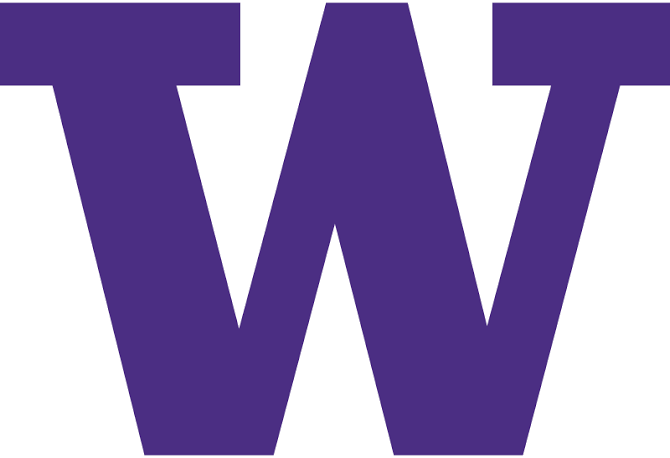
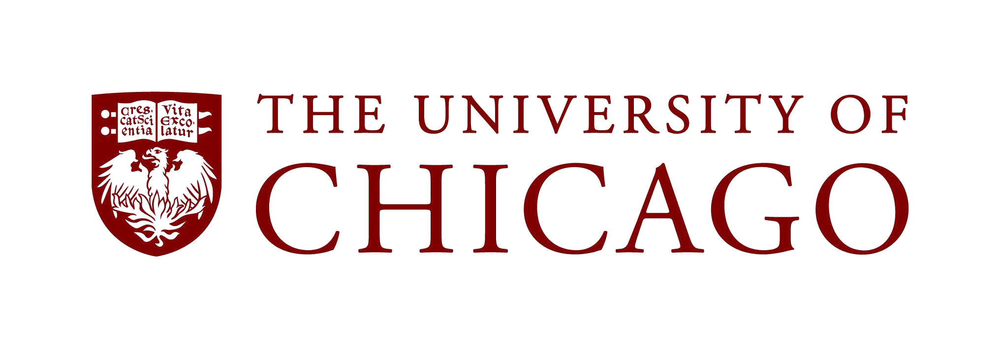

Online interview
Join a research team member for a conversation about your professional experience.
How do decisions about youth AI safeguards take shape in practice? We are researchers from the 
We want to understand how the people building and managing AI products make decisions that affect young users.
In this study, we explore how teams identify concerns, choose and evaluate safeguards, and navigate the role that legal requirements or other guidance may play in their work. Your experience can help illuminate how these decisions unfold in practice.
We hope to speak with practitioners whose work involves AI products and decisions about safeguards for young people.
[PRACTITIONER ROLES AND ELIGIBILITY CRITERIA TO BE CONFIRMED]
Join a research team member for a conversation about your professional experience.
We’ll discuss your work and a safeguard decision you were involved in.
You may skip any question or stop at any point. Please leave out confidential company information and identifying details.
You may discuss current or previous work and describe products in broad terms. We’re interested in the practical choices and challenges behind youth AI safeguards.
A collaboration between researchers at the University of Washington and the University of Chicago.
Learn more about the people and labs behind this study.

[TEAM MEMBER NAMES, ROLES, AND ADDITIONAL LINKS TO BE ADDED]
[RELATED WORKSHOP LINK TO BE ADDED, IF APPLICABLE]
Our team’s work has long focused on security and privacy, including youth AI safety, content moderation, and children’s online safety. Explore selected publications below.
A benchmark and safeguard model for risks in young people’s interactions with AI.
Read the paper ↗Parent and child perspectives on safety concerns, mitigation strategies, and design.
Read the paper ↗An examination of moderation policies and user experiences in generative AI tools.
Read the paper ↗Co-designed lessons to help children learn about digital privacy and security.
Read the paper ↗These publications are prior work by the named researchers and their collaborators; institutional affiliations may differ from those of this study.
Help us better understand how safeguards for young people are shaped in practice.
[SIGN-UP OR SCHEDULING LINK TO BE ADDED]